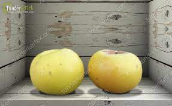

Pónyik almafa
Menü:
Vissza a fő oldalra
Az oldal linkje ahonnan vannak a tudni valók
Származási hely:
Erdély
Érési idő
Október
Gyümölcsről tudni valók
- középnagy
- héja vastag citromsárga
- sárgásfehér húsú
Kép egy ilyen almáról ami projecten belüli:

Kép egy ilyen almáról ami külső hivatkozásból származik: